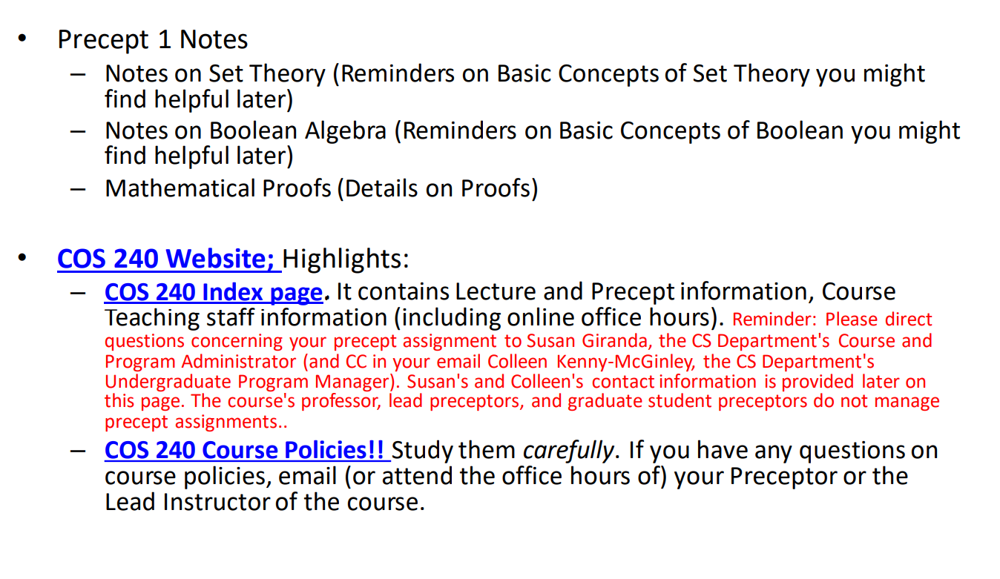

COS 240
Spring 2024
- Precept 1 notes
- Notes on Set Theory (Reminders on Basic Concepts of Set Theory you might
find helpful later)
- Notes on Boolean Algebra (Reminders on Basic Concepts of Boolean you might
find helpful later)
- Mathematical Proofs (Details on Proofs)
- COS 240 Website; Highlights:
- COS 240 Index page. It contains Lecture and Precept information, Course
Teaching staff information (including online office hours). Reminder: Please direct
questions concerning your precept assignment to Susan Giranda, the CS Department's Course and
Program Administrator (and CC in your email Colleen Kenny-McGinley, the CS Department's
Undergraduate Program Manager). Susan's and Colleen's contact information is provided later on
this page. The course's professor, lead preceptors, and graduate student preceptors do not manage
precept assignments..
- COS 240 Course Policies!! Study them carefully. If you have any questions on
course policies, email (or attend the office hours of) your Preceptor or the
Lead Instructor of the course.
original slide:
